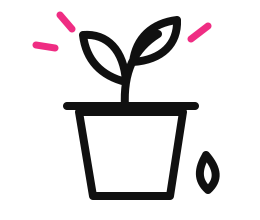
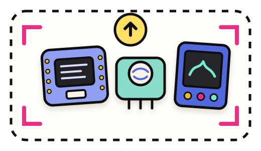
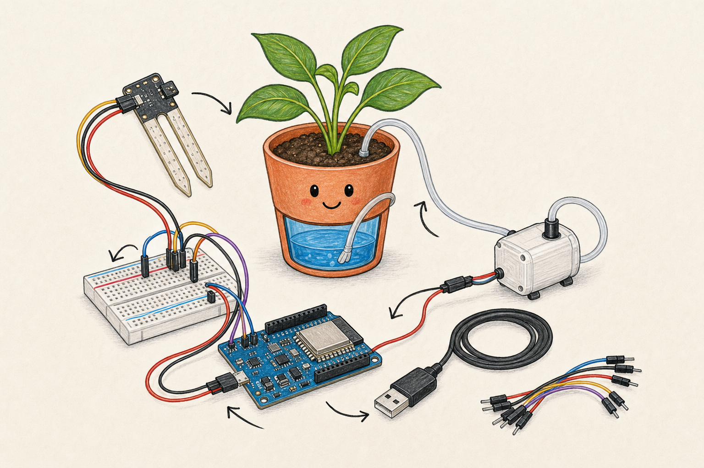

What do you
want to make?
Tell us like you’d tell a friend.

welcome.
Show me what’s
on your desk.
Put your parts in one photo. I’ll name them for you.
- 1Choose one photoThree quick checks first
- 2Identify the partsThis starts automatically
- 3Build the guideNo extra button needed

Build it one
connection at a time.
Your own photo becomes the map. When it’s wired, we’ll give it a brain.
Your next move
Step 0 of 0Your build is wired.
Let’s give it a brain.
I’ll prepare the code, check it, and put it on your board.
Three quick steps
1Plug the USB cable into your computer.
2Choose your board when the browser asks.
3Keep this tab open while Makeable finishes.
Makeable handles the code from here.
One click prepares, checks, and loads everything. You’ll see each step below.
Opening Test in 3 seconds.
Let’s check the
hardware.
I’ll listen to the board and explain what its code is doing.
Board messages
Connect once, then watch what the ESP32 is saying.
Board messages will appear here after you connect.
What the board is doing
A simple explanation, without code words.
Create your guide first, then I’ll explain the behavior here.
You built it.
Nice work.
Makeable keeps the guide, parts list, and test results together while you build.

My Makeable projectTested & workingYour project notes will appear here.